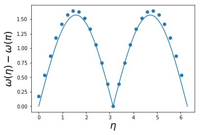
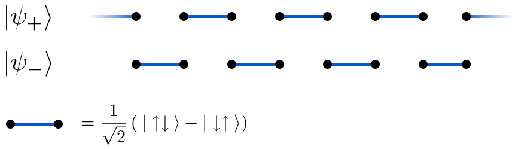

The Haldane Gap
(non examinable)
The OpenAI dump
6th October 2026: OpenAI released 719 mathematical preprints
Included a proof of the Haldane conjecture:
Antiferromagnetic (J>0) Heisenberg chain is gapless for half integer spin and gapped for integer spin
OpenAI result concerns the spin-1 case. It was already established that the half integer spin chains are gapless
This lecture: background and significance of the problem, and why it is hard
This is mathematical physics, meaning that we are talking about rigour
I won’t have much to say about the proof itself: see Hal Tasaki’s commentary
The model
Recall from spin models H = J \sum_{j=1}^N \mathbf{s}_j \cdot \mathbf{s}_{j+1}
Define the energy gap \gamma_L = E_1(L) - E_0(L)
E_0(L) is gs energy of chain of length L and E_1(L) is next distinct energy
\Delta_1 = \liminf_{\substack{L \to \infty \\ L \text{ even}}} \gamma_L
- If \Delta_1 > 0 system is gapped; otherwise gapless
Reminder: spin-1/2 chain
- Holstein–Primakoff treatment gave dispersion relation for J>0
\omega_{\text{AFM}}(\eta) = 2sJ\left|\sin(\eta)\right|
- Compare with exact result
\omega_{\text{dCP}}(\eta) = \frac{\pi J}{2}\left|\sin(\eta)\right|

Majumdar–Ghosh model
Another possibility: ground state can be degenerate
H_\text{MG} = J \sum_{j=1}^N \mathbf{s}_j \cdot \mathbf{s}_{j+1} + \frac{J}{2} \sum_{j=1}^N \mathbf{s}_j \cdot \mathbf{s}_{j+2}
- Couplings chosen carefully so that (up to an overall constant)
H_\text{MG} = \frac{J}{4} \sum_{j=1}^N \left[\mathbf{s}_{j-1} + \mathbf{s}_{j} + \mathbf{s}_{j+1}\right]^2
H_\text{MG} = \frac{J}{4} \sum_{j=1}^N \left[\mathbf{s}_{j-1} + \mathbf{s}_{j} + \mathbf{s}_{j+1}\right]^2
Each term involves sum of three spins
By the usual AM addition rules, the spin quantum number is 3/2 or 1/2
Lowest when any three consecutive spins add to make S=1/2
Put two spins in a singlet: two linearly independent ways to do this

Lieb–Schultz–Mattis (LSM) theorem
For half-integer spin: a translationally invariant half-integer spin chain cannot have a unique ground state with a gap
Either have a gap and a degenerate ground state (MG model) or a unique ground state and no gap (Heisenberg)
Version due to Affleck and Lieb (1986) (see 2019 TQM paper)
Consider Heisenberg chain of N (even) spins and PBC
Argument only uses translation invariance, short-range interactions, and conservation of S^z_\text{tot} = \sum_j s^z_j, so is more general
Suppose the ground state \ket{0} is unique. It is then a singlet, so S^z\ket{0}=0
\ket{0} is eigenstate of the translation operator T, with T\mathbf{s}_jT^{-1} = \mathbf{s}_{j+1}
The twist
U = \exp\left(\frac{2\pi i}{N}\sum_{j=1}^N j\, s^z_j\right)
Rotates spin on site j about the z-axis by an angle 2\pi j/N
Neighbouring spins are rotated by 2\pi/N relative to each other
U s^\pm_j U^\dagger = e^{\pm 2\pi i j/N}s^\pm_j (e.g. by Hadamard lemma)
H' = UHU^\dagger = J\sum_{j=1}^N\left[\frac{1}{2}\left(e^{-2\pi i/N}s^+_js^-_{j+1} + e^{2\pi i/N}s^-_js^+_{j+1}\right) + s^z_js^z_{j+1}\right]
Orthogonality
- Next show that U^\dagger\ket{0} is orthogonal to \ket{0}. Translating twist gives
TUT^{-1} = \exp\left(\frac{2\pi i}{N}\sum_{j=1}^N j\, s^z_{j+1}\right) = U\, e^{-2\pi i S^z/N}\, e^{2\pi i s^z_1}
Here e^{2\pi i s^z_1}, a 2\pi rotation of a single spin, is (-1)^{2s} times the identity
Since \ket{0} is translationally invariant and has S^z=0
\braket{0|U|0} = \braket{0|TUT^{-1}|0} = (-1)^{2s}\braket{0|U|0}
For half-integer s, it follows that \braket{0|U|0}=0
Equivalently, U\ket{0} has momentum shifted by \pi relative to \ket{0}
Variational bound
- U^\dagger\ket{0} is orthogonal to ground state, so its energy is an upper bound on E_1
E_1 - E_0 \leq \braket{0|H'|0} - \braket{0|H|0}
\braket{0|H'|0} - \braket{0|H|0} = \frac{J}{2}\sum_{j=1}^N\left\langle\left(e^{-2\pi i/N}-1\right)s^+_js^-_{j+1} + \text{h.c.}\right\rangle
Reflection symmetry j\to -j gives \langle s^+_js^-_{j+1}\rangle = \langle s^-_js^+_{j+1}\rangle
Using translation and spin-rotation invariance
E_1 - E_0 \leq J\left(1-\cos\frac{2\pi}{N}\right)\cdot\frac{2N}{3}|\langle \mathbf{s}_j\cdot\mathbf{s}_{j+1}\rangle| \simeq \frac{4\pi^2 J}{3N}|\langle \mathbf{s}_j\cdot\mathbf{s}_{j+1}\rangle| \to 0
- Argument fails for integer spin: (-1)^{2s}=+1
Affleck–Kennedy–Lieb–Tasaki (AKLT) model
LSM leaves room for a unique gapped ground state in spin-1 case H_\text{AKLT} = J \sum_{j=1}^N \mathbf{s}_j \cdot \mathbf{s}_{j+1} + \frac{J}{3} \sum_{j=1}^N \left(\mathbf{s}_j \cdot \mathbf{s}_{j+1}\right)^2
Up to a constant H_\text{AKLT} = 2J \sum_{j=1}^N P^{(2)}_{j,j+1}
P^{(2)}_{j,j+1} projects two neighbouring spins on to the subspace of total spin-2
Check
Show this. The key is to consider the sum of the two neighbouring spins \mathbf{s}_j + \mathbf{s}_{j+1}, which may have S=2, 1, or 0, so that
\left(\mathbf{s}_j + \mathbf{s}_{j+1}\right)^2 = S(S+1) = 6, 2, 0.
This means that the combination \left(\mathbf{s}_j + \mathbf{s}_{j+1}\right)^4 - 2\left(\mathbf{s}_j + \mathbf{s}_{j+1}\right)^2 gives zero on the spin-0 and spin-1 subspaces, projecting onto spin-2.
AKLT state
Make spin-1 \mathbf{s}_j on each site from two spin-1/2: s_{j,L/R}
Ground state is constructed in two steps
- Create singlets between neighbouring sites: between \mathbf{s}_{j,R} and \mathbf{s}_{j+1,L}, and between \mathbf{s}_{j,L} and \mathbf{s}_{j-1,R}
- Next, project each pair \mathbf{s}_{j,L/R} onto spin-1.

Check
- Why is this ground state?
Is it gapped?
Simple proof of the gap is due to Knabe (1988), using
- H_\text{AKLT} is sum of projectors
- It is frustration free: the ground state minimizes every term separately
H = \sum_{i=1}^N P_i,\qquad P_i \equiv P^{(2)}_{i,i+1},\qquad P_i^2 = P_i,\qquad H\ket{\Psi}=0
- Strategy is to prove an operator inequality of the form
H^2 \geq \delta H, \qquad \delta>0
- Applied to eigenstate with energy E: E^2\geq \delta E, so either E=0 or E\geq\delta
H^2 = H + \sum_{d\geq 1} R_d,\qquad R_d = \sum_i \left\{P_i, P_{i+d}\right\}
For d\geq 2 each P_iP_{i+d} is itself a projector, and R_d\geq 0
Problem is R_1: need not be positive
Knabe’s idea: control them using a finite open chain
h_j = \sum_{i=j}^{j+m-1} P_i
Let \delta_m be gap of h_j. Lowest eigenvalue is zero by frustration freeness
We have h_j^2\geq \delta_m h_j. Summing over all N windows, \sum_j h_j = mH, so
\sum_j h_j^2 \geq m\,\delta_m H
Expand each h_j^2 and count how often each term appears
Each P_i lies in m windows; each pair at distance d in m-d windows. Since m-d\leq m-1 and R_d\geq 0 for d\geq 2
\begin{align*} \sum_j h_j^2 &= mH + (m-1)R_1 + \sum_{d=2}^{m-1}(m-d)R_d \\ &\leq mH + (m-1)\sum_{d\geq 1}R_d = mH + (m-1)\left(H^2 - H\right) \end{align*}
- Combining two inequalities gives an operator inequality for the full chain:
H^2 \geq \frac{m\delta_m - 1}{m-1}\, H
- Applied to any eigenstate with E>0, this gives
\gamma_N \geq \frac{m}{m-1}\left(\delta_m - \frac{1}{m}\right)
A gap of the infinite chain follows from a gap on a finite chain
All we need is \delta_m > 1/m for some m
Exact diagonalization of finite open chains
| sites m+1 | \delta_m | 1/m | Knabe’s bound |
|---|---|---|---|
| 3 | 0.500 | 0.500 | 0 |
| 4 | 0.449 | 0.333 | 0.173 |
| 6 | 0.398 | 0.200 | 0.248 |
| 11 | 0.367 | 0.100 | 0.296 |
Gap of the AKLT chain is at least 0.173 in units of 2J, i.e. \gamma \geq 0.35J
Bound improves with m towards the true value \approx 0.350 (\approx 0.70J)
Argument works because H_\text{AKLT} is frustration free
Not true of spin-1 Heisenberg chain, which is why Haldane conjecture needed a very different approach